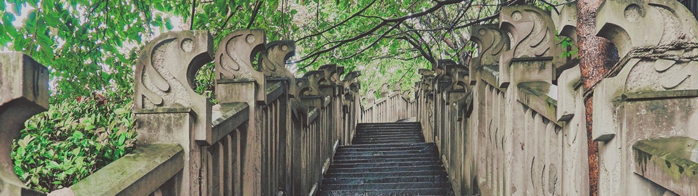

山城步道：会喘气的城市年轮，重庆人的空中胡同
导航到这儿都得懵圈——明明写着"山城第三步道"，走着走着头顶冒出居民楼阳台。晾衣杆上的花裤衩在脑门飘，脚底下是嘉陵江货轮鸣笛，重庆人硬是把山崖峭壁走成了立体胡同。
青石板路才是真正的时空隧道。上半截踩着1900年的法国医院旧址，下半截踏着2010年的悬空栈道，转角遇见1998年的老杂货铺。店主嬢嬢会端着搪瓷缸指挥你拍照："莫光拍江景，把对面轻轨和俺家腊肠拍进同个框，才是正宗重庆味！"
崖壁上的茶馆比磁器口实在。花五块钱能坐一下午，竹椅嘎吱响着往江面倾斜45度，端茶的手不抖算你赢。常客老大爷爱显摆："九几年这儿还是防空洞，我们打麻将听到头顶游客尖叫，比现在刺激多了！"
老社区把步道当自家客厅用。放学娃儿背着书包在台阶蹦迪，火锅店老板扛着毛肚筐和游客挤栈道，顶楼住户晒被子要拿竹竿捅云朵。走到领事巷别惊讶，晾在民国老墙上的牛仔裤，和西班牙使馆旧址的红砖配得刚刚好。
真正的彩蛋藏在岔路里。仁爱堂废墟突然变身荒野花园，锈铁门里野花窜得比人高；厚庐石库门藏着邮票博物馆，能淘到1981年的山城夜景邮票。走累了钻进防空洞酒馆，老板用泡菜坛子装精酿："喝的时候想想，六十年前这里存过备战粮呢！"
小贴士：较场口5号出口出发最省力，记得穿抓地力强的鞋——某些坡陡得需要手脚并用。清晨七点来能撞见老城苏醒名场面：棒棒军扛货上山，面馆第一锅小面起锅，遛鸟大爷的画眉和轻轨进站声battle。下山右拐吃熨斗糕，三角粑烫嘴时流的泪，和爬坡累出的汗一样咸。